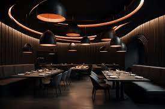

Welcome to Simply Four, where less is more. Our menu is simple yet exquisite, offering just four carefully crafted dishes that highlight the very best ingredients. Every item is prepared with precision and passion, ensuring a memorable dining experience. At Simply Four, we believe in quality over quantity—each dish is a celebration of flavor, freshness, and creativity. Come enjoy the art of simplicity.
Simply Four is a unique dining experience where simplicity meets flavor, offering just four carefully crafted dishes. At Simply Four, we believe in doing fewer things, but doing them exceptionally well. The menu at Simply Four focuses on quality, with only four dishes that change the way you think about food. Each dish at Simply Four is thoughtfully prepared, using the freshest ingredients and perfected with every serving. Simply Four invites you to enjoy a dining experience where every bite counts, with a limited yet refined selection. Why complicate things? At Simply Four, we focus on just four signature dishes, made to perfection every time. At Simply Four, our minimalist approach lets us concentrate on creating an unforgettable meal with fewer options but more impact. The concept of Simply Four is to strip away the excess and deliver only the finest dishes, expertly curated for your enjoyment. With a menu that offers just four dishes, Simply Four is redefining the art of dining with simplicity and elegance. Whether you're a first-time visitor or a regular, Simply Four guarantees a memorable meal with its limited but delicious menu.
Inside of Simply Four
We have available jobs in our fine establishment, so if you want to apply, you can file a form by clicking on job application in navigation.